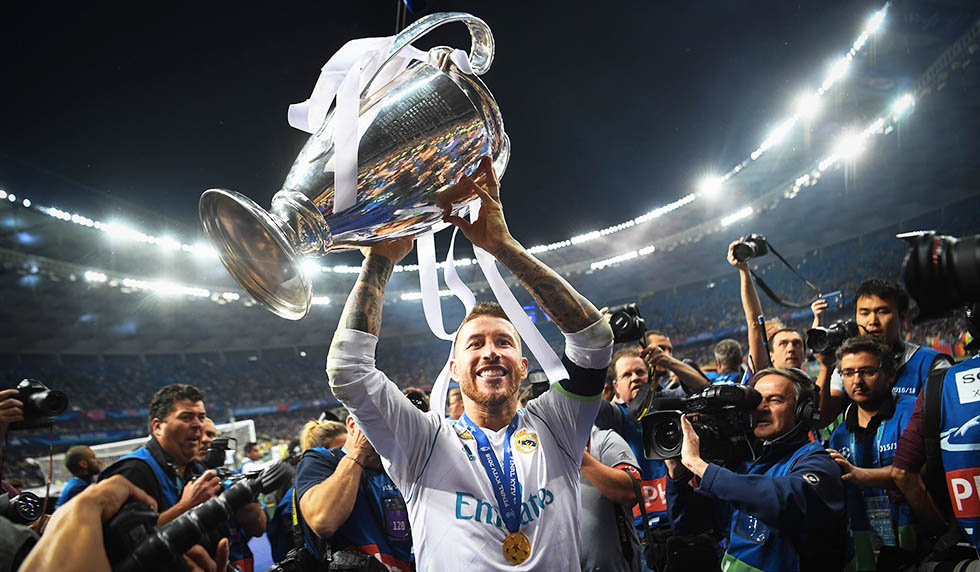
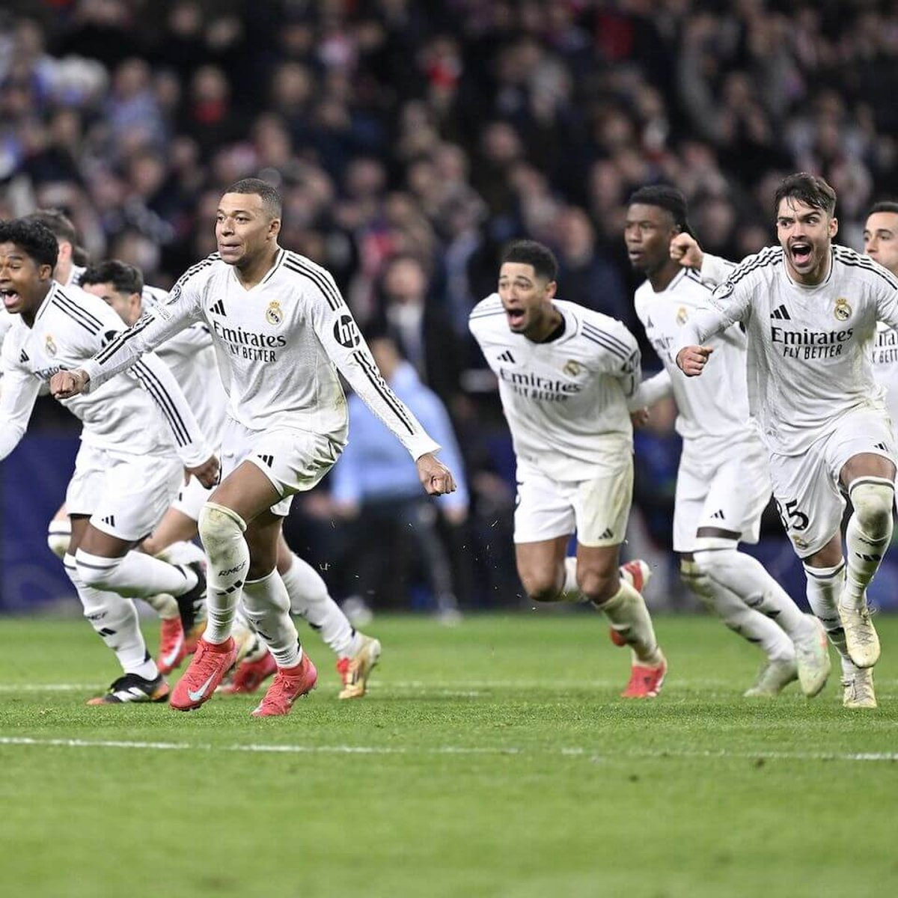

היסטוריית הזהב של ריאל מדריד
מ־1902 ועד היום, ריאל מדריד בנתה לעצמה שם כמועדון הכדורגל הגדול בעולם. אצטדיון סנטיאגו ברנבאו, הגלדיאטורים על הדשא, והאוהדים – כולם חלק מהסיפור.
ציר זמן של רגעים היסטוריים
1902
הקמת המועדון
ריאל מדריד נוסדה באופן רשמי והחלה את דרכה כקבוצת כדורגל צנועה בעיר מדריד.

1955–1960
השליטה באירופה
ריאל זוכה בחמש הגביעים הראשונים של גביע אירופה לאלופות ברצף – ומבססת לעצמה מעמד אגדתי.

2002
גמר המאה – הוולה של זידאן
זינדין זידאן כובש וולה אייקוני מול לברקוזן בגמר ליגת האלופות, אחד השערים היפים בהיסטוריה.

2014
לה דסימה
ראמוס משווה בדקה 93 מול אתלטיקו, וריאל משלימה זכייה עשירית בליגת האלופות – “לה דסימה”.

2016–2018
שלוש זכיות רצופות
ריאל מדריד רושמת היסטוריה עם שלוש זכיות ברצף בליגת האלופות תחת זידאן.

היום
המשכיות של מסורת
כוכבים חדשים, אצטדיון מחודש, ושאיפה אחת שלא משתנה – להמשיך להיות המועדון הגדול בעולם.

שיאים ותארים מרכזיים
15
זכיות בליגת האלופות
35+
אליפויות ספרד (לה ליגה)
20+
גביעי מלך ספרד
5+
גביעי עולם למועדונים
תקצירים ממשחקים גדולים
תוכלו לצפות כאן בתקצירים של המשחקים הגדולים ביותר – גמרים, מהפכים, רגעים היסטוריים.